În stînga este slide-ul din curs, în dreapta aceeași figură, calculată în browser din aceleași date. Butonul ▶ modifică parametrul pas cu pas.
VaR și Expected Shortfall · Măsuri de risc coerente · Metode de estimare · Precizia estimărilor VaR și ES · VaR și ES condiționate · Teoria valorilor extreme · Orizontul: regula rădăcinii pătrate · VaR de portofoliu și contribuțiile la risc · Lichiditate și reglementare · Studii de caz: rețele neuronale și forma dinamică a cozii · AI pentru descoperire științifică
VaR și Expected Shortfall
VaR și ES pentru S&P 500
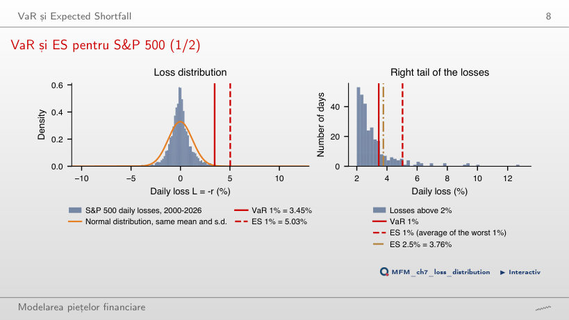
Răspuns
5,03%. Pragul VaR a fost depășit în 68 din 6 717 zile (1,01%), iar ES 1% este media celor mai mari nα = 67,17 pierderi, ultima cu ponderea 0,17. Distribuția Normală cu aceeași medie și abatere standard dă VaR 1% de 2,80% și ES 1% de 3,21%: cozile ei sînt prea subțiri.
Măsuri de risc coerente
Subaditivitatea: încălcată de VaR, respectată de ES
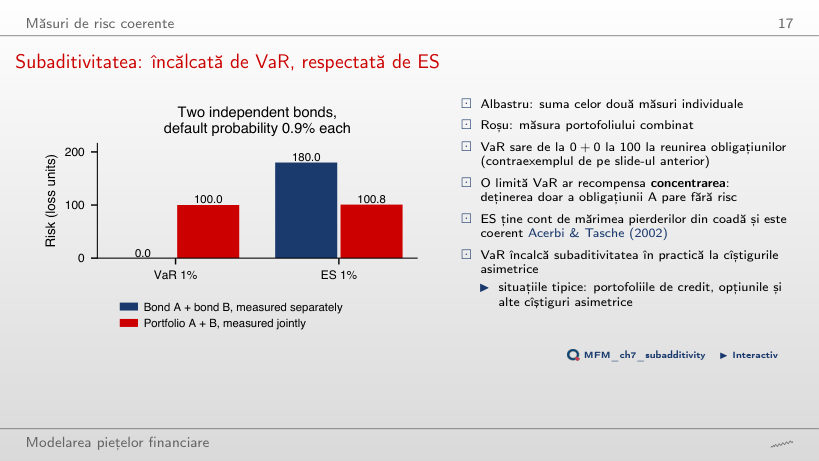
Răspuns
Probabilitatea de default a fiecărei obligațiuni, 0,9%, este sub nivelul de 1%, deci VaR individual este 0. Probabilitatea ca cel puțin una să intre în default este 1,79%, peste 1%, deci VaR-ul portofoliului este 100 > 0 + 0. ES este subaditiv: 100,8 pentru portofoliu, față de 90 + 90 = 180. VaR încalcă subaditivitatea doar cînd probabilitatea de default este între circa 0,5% și 1%.
Metode de estimare
Cinci metode la diferite niveluri de risc
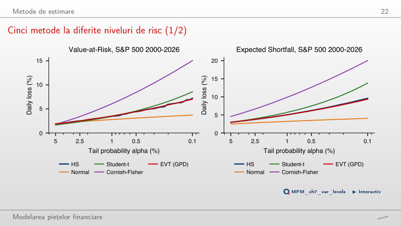
Răspuns
În extremitatea cozii. La α = 0,1%, VaR este 7,22% istoric, 7,04% cu EVT, 8,58% cu Student-t și 15,06% cu Cornish–Fisher, iar distribuția Normală dă doar 3,72%. La α = 5%, toate cele cinci valori sînt între 1,67% și 1,97%.
Precizia estimărilor VaR și ES
Precizia pentru S&P 500
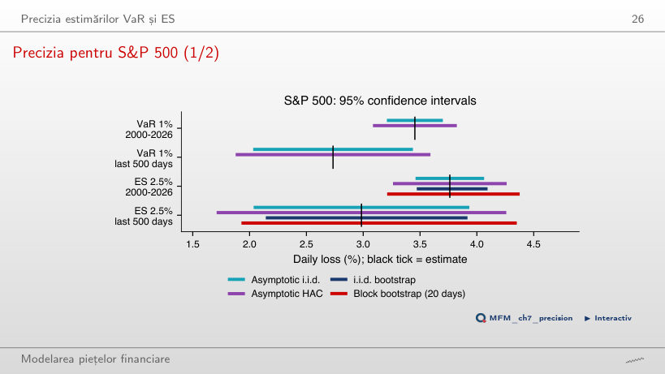
Răspuns
Pe nα = 12,5 pierderi: cele mai mari 12 cu ponderea 1 și a 13-a cu ponderea 0,5. Intervalul HAC are lățimea de 2,55 pp, iar cel bootstrap pe blocuri 2,42 pp. Pe selecția 2000–2026, volatility clustering lărgește intervalul ES de la 0,60 pp (i.i.d.) la 1,00 pp (HAC), iar bootstrap-ul de la 0,62 pp la 1,17 pp.
VaR și ES condiționate
Simularea istorică și simularea istorică filtrată: S&P 500
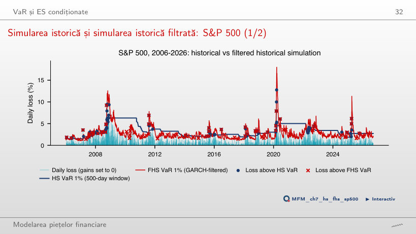
Răspuns
FHS, cu 1,54% (80 din 5 210 zile), față de 1,67% pentru simularea istorică pe 500 de zile și 2,34% pentru GARCH cu șocuri Normale. Depășirile simulării istorice apar în grupuri, în 2008 și 2020, pentru că fereastra reacționează cu luni de întîrziere.
CAViaR față de simularea istorică filtrată out-of-sample
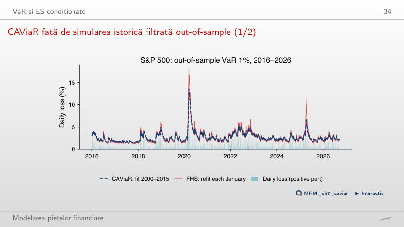
Răspuns
În circa 6,4 zile: timpul de înjumătățire este ln 0,5 / ln β₁, cu β₁ = 0,897. Out-of-sample, în 2016–2026, CAViaR și FHS au fiecare 35 de depășiri (1,30%), iar pierderea pinball medie este 0,039 pentru CAViaR și 0,037 pentru FHS.
Teoria valorilor extreme
Maximele lunare ale pierderilor S&P 500
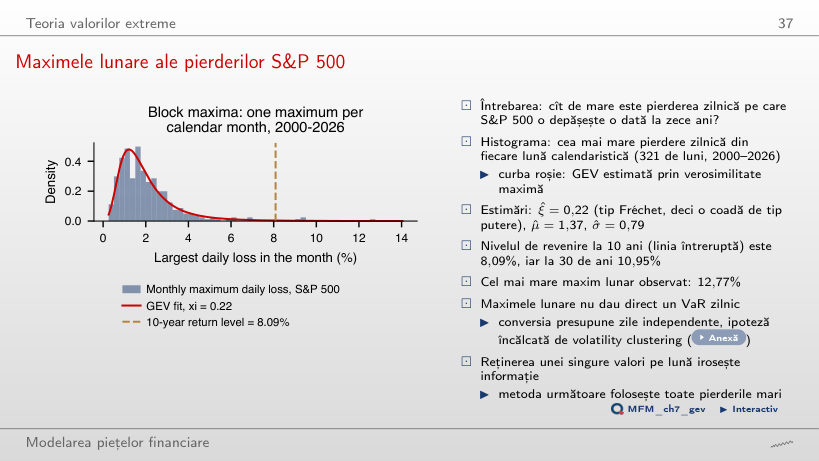
Răspuns
8,09%, nivelul de revenire la 10 ani (120 de luni) al distribuției GEV estimate pe maximele lunare, cu ξ = 0,22. Patru dintre cele 321 de maxime lunare îl depășesc, iar cel mai mare maxim lunar observat este 12,77%.
Graficul excesului mediu: S&P 500
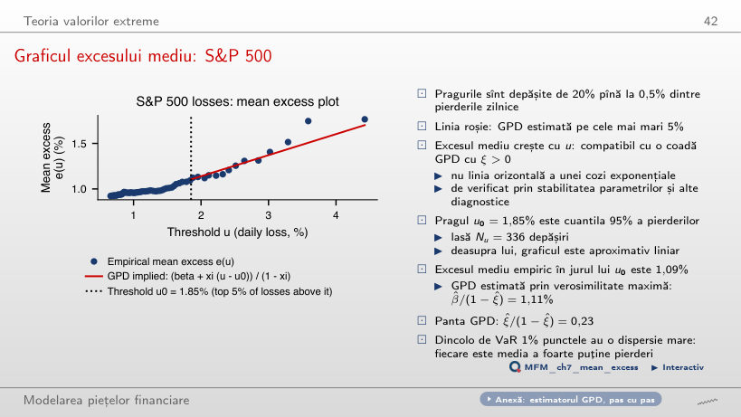
Răspuns
Pentru că coada este grea: pentru o GPD cu ξ > 0, e(u) este liniară, cu panta ξ/(1 − ξ) = 0,23. La pragul u₀ = 1,85% (cele mai mari 5% dintre pierderi, 336 de depășiri), excesul mediu empiric este 1,09%, iar GPD dă 1,11%. Pentru o coadă exponențială, graficul ar fi orizontal.
Cozi GPD: S&P 500 și Bitcoin
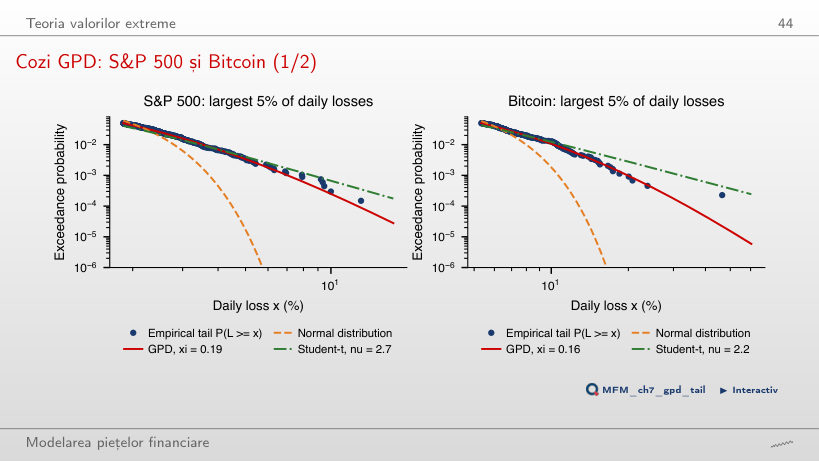
Răspuns
Estimările formei sînt apropiate: ξ = 0,19 (SE 0,065) pentru S&P 500 și ξ = 0,16 (SE 0,078) pentru Bitcoin, deci diferența nu este semnificativă. Bitcoin are însă o scală mult mai mare: VaR 1% din GPD este 10,23%, față de 3,54% pentru S&P 500.
EVT condiționată pentru S&P 500
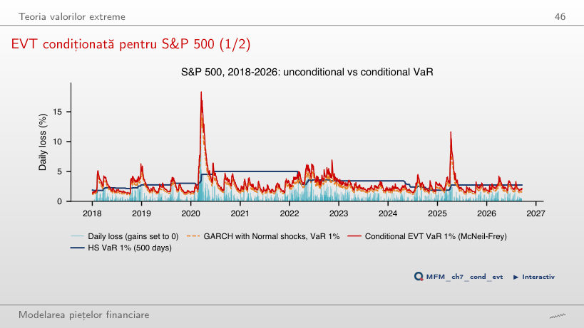
Răspuns
Pentru că șocurile standardizate au cozi mai grele decît distribuția Normală. În 2018–2026 (2 190 de zile), VaR 1% GARCH-Normal este depășit în 2,42% din zile, EVT condiționată în 1,23%, iar simularea istorică pe 500 de zile în 1,60%. EVT condiționată păstrează dinamica GARCH și corectează nivelul printr-o coadă GPD a reziduurilor.
Orizontul: regula rădăcinii pătrate
Regula rădăcinii pătrate în date
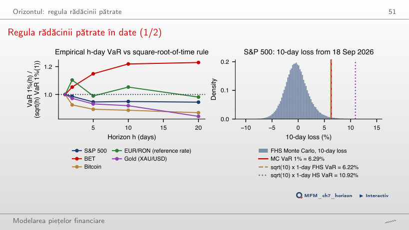
Răspuns
Depinde de serie. Raportul dintre VaR 1% empiric pe 10 zile și √10 × VaR pe o zi este 1,22 pentru BET (autocorelația de ordinul 1: 0,109) și 1,05 pentru EUR/RON, deci regula subestimează riscul. Pentru S&P 500 (0,95), aur (0,92) și Bitcoin (0,89) regula este conservatoare. Pentru S&P 500, Monte Carlo filtrat dă 6,29%, față de 6,22% pentru √10 × VaR filtrat pe o zi.
VaR de portofoliu și contribuțiile la risc
Contribuțiile activelor la risc
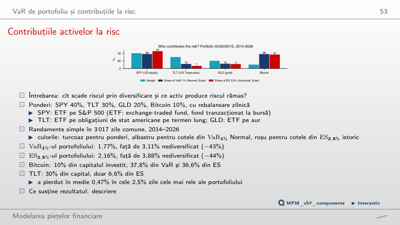
Răspuns
37,8% din VaR 1% (Normal, Euler) și 36,6% din ES 2,5% (istoric). TLT, cu 30% din capital, aduce doar 6,6% din ES. Diversificarea reduce VaR 1% de la 3,11% (suma VaR-urilor individuale) la 1,77%.
Lichiditate și reglementare
VaR 1% față de ES 2,5% pe cinci active
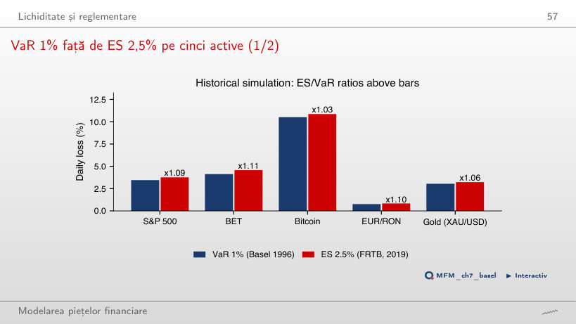
Răspuns
Între 1,03 (Bitcoin) și 1,11 (BET): 1,09 pentru S&P 500, 1,10 pentru EUR/RON și 1,06 pentru aur. Sub distribuția Normală, raportul este 2,338/2,326 ≈ 1,005. Trecerea de la VaR 1% la ES 2,5% crește deci măsura pe o zi cu 3–11%.
Studii de caz: rețele neuronale și forma dinamică a cozii
Studiu de caz: erorile relative, α = 1%
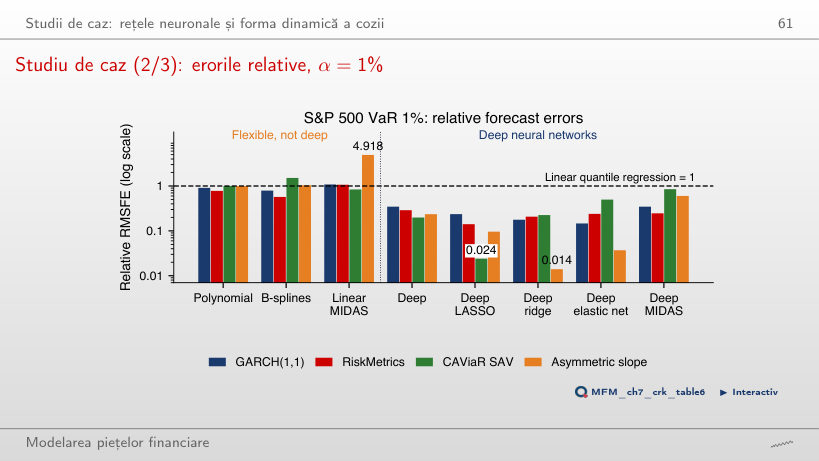
Răspuns
Nu direct. Toate cele 20 de bare ale rețelelor adînci (inclusiv MIDAS adînc) sînt sub 1, între 0,014 și 0,850, dar RMSFE este minimizată de media condiționată, nu de cuantilă. Precizia unei prognoze de cuantilă se compară prin pierderea pinball. În plus, rezultatul provine dintr-o singură fereastră fixă de calibrare.
Al doilea studiu de caz (2/4): forma și scala cozii S&P 500, 2000–2026
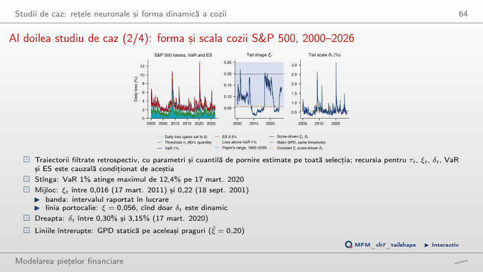
Răspuns
Doar 1,04: −380,85 cu ξt și δt dinamice, față de −381,89 cu ξ constant (0,056) și δt dinamic, pentru doi parametri în plus. AIC este 774 față de 772, deci modelul cu ξ constant este preferat; GPD statică are AIC 853, deci cîștigul vine din scala δt. Cu aξ = 0, ξt rămîne fix la 0,083. VaR 1% filtrat este depășit în 61 din 6 717 zile (0,91%).
AI pentru descoperire științifică
Mini-studiu de caz: ordonarea modelelor ES
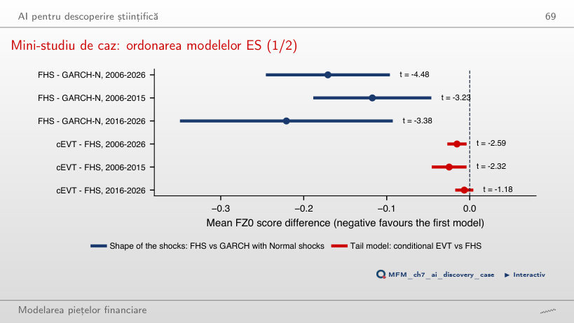
Răspuns
Nu. Diferența medie a scorurilor FZ0 este semnificativ negativă pe 2006–2026 (t = −2,59) și în 2006–2015 (t = −2,32), dar nu și în 2016–2026 (t = −1,18; intervalul [−0,017; 0,004]). Regula cere semnificație la 5% în ambele jumătăți. FHS față de GARCH–Normal o îndeplinește: t = −3,23 și t = −3,38.
Pierderi zilnice L = −r, în %, pînă la 18 septembrie 2026. S&P 500, BET, Bitcoin, aur (XAU/USD) și ETF-urile SPY, TLT, GLD: prețuri zilnice EODHD; EUR/RON: cursul de referință BNR. Studiile de caz: Tabelul 6 din Chronopoulos, Raftapostolos și Kapetanios (2024), Journal of Financial Econometrics; modelul GPD score-driven din D’Innocenzo, Lucas, Schwaab și Zhang (2024), Journal of Business & Economic Statistics, estimat pe datele cursului.